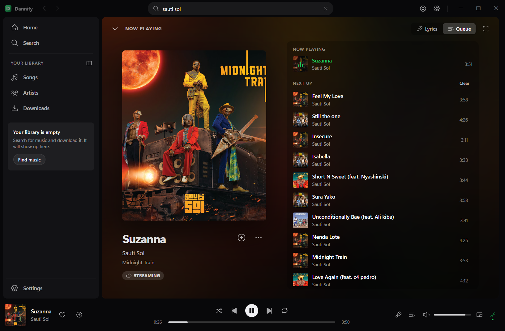

Dannify searches, streams and keeps music offline, shows lyrics in time with the song, and gets out of the way. It starts fast, stays out of your taskbar until you want it, and updates itself without making a thing of it.
Windows 10 and 11, 64-bit. One installer, nothing to set up first.

Nothing here is a demo. These are the parts that get used the most.
Press play and the sound is there. Tracks you are likely to reach for next are lined up before you ask for them.
Save anything to your library and it plays with the network off. Artwork, titles and artists come along with it.
The line being sung is the one in focus; the rest fall back. If a song has none, you can write them and everyone else gets them too.
Shrink it to a corner of the screen, with the lyrics or the queue tucked underneath, and carry on with whatever you were doing.
Seven palettes, real font choices and spacing that was picked rather than guessed. Pick once; it stays picked.
Snap layouts on the maximize button, a real tray menu, thumbnail controls on the taskbar and the media keys on your keyboard.
Between two versions almost nothing moves, so Dannify fetches only the files that changed and applies them when you close it.
Close it mid-song and it comes back cued to the same second, with the same queue, shuffle and repeat you left behind.
Every shot below is the app running. Click one to see it full size.
There is no runtime to install first and nothing to configure afterwards.
One file, around 48 MB. Windows 10 or 11, 64-bit.
It installs for you alone, so there is no administrator prompt. Windows may ask you to confirm an unrecognised publisher the first time.
Search for something and press play. Later versions arrive on their own.
A release is about 145 MB on disk, but between two versions almost none of it moves: Python, the browser engine and every library stay byte for byte the same. Dannify works out which files it is actually missing and pulls only those, which is usually a few megabytes rather than fifty.
Checking what changed, downloading, verifying — with a real figure against each, not a bar that sits at nothing.
Nothing is replaced while you are listening. The update goes in when you close the app, or straight away if you say so.
If the small path cannot be trusted for any reason, Dannify falls back to the complete installer by itself.
No. Dannify is free and stays free. If you want to put something in the tip jar there is a Ko-fi link in the app, under Settings → About.
Both are planned. The window, the tray menu and the installer are written against Windows at the moment, so those are the parts being rewritten first. Watch the releases page.
Not public for now. That may change; until it does, the releases page is where the builds live.
The installer is not signed with a paid certificate yet. Choose More info and then Run anyway. Only ever install it from the releases page linked here.
No. Your music, playlists, settings and sign-in live outside the program folder and are left alone by every update, including a reinstall over the top.
Open an issue on the releases repository and say what you were doing when it happened. That is enough to start with.